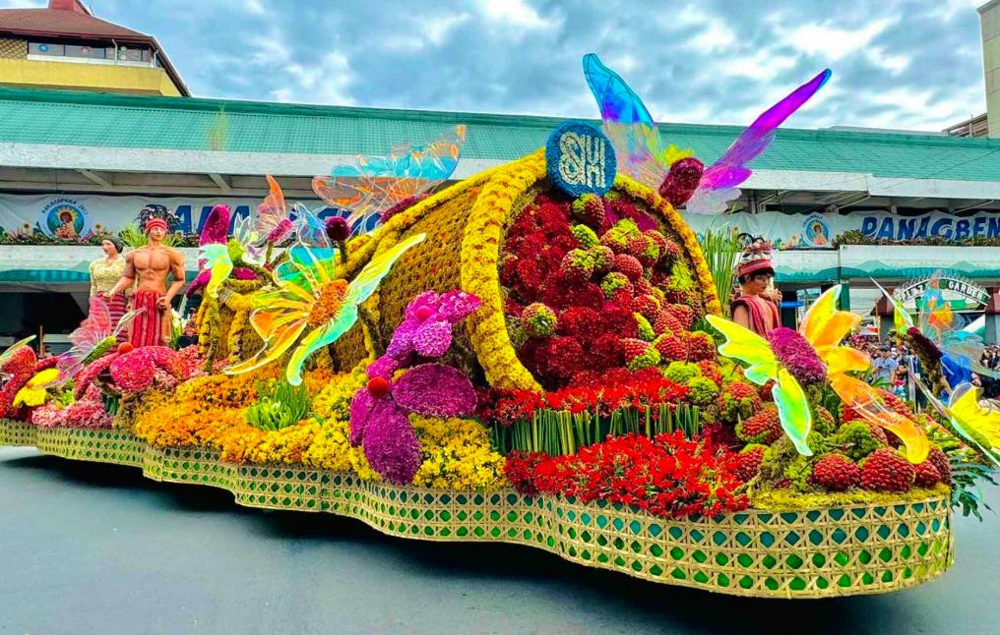
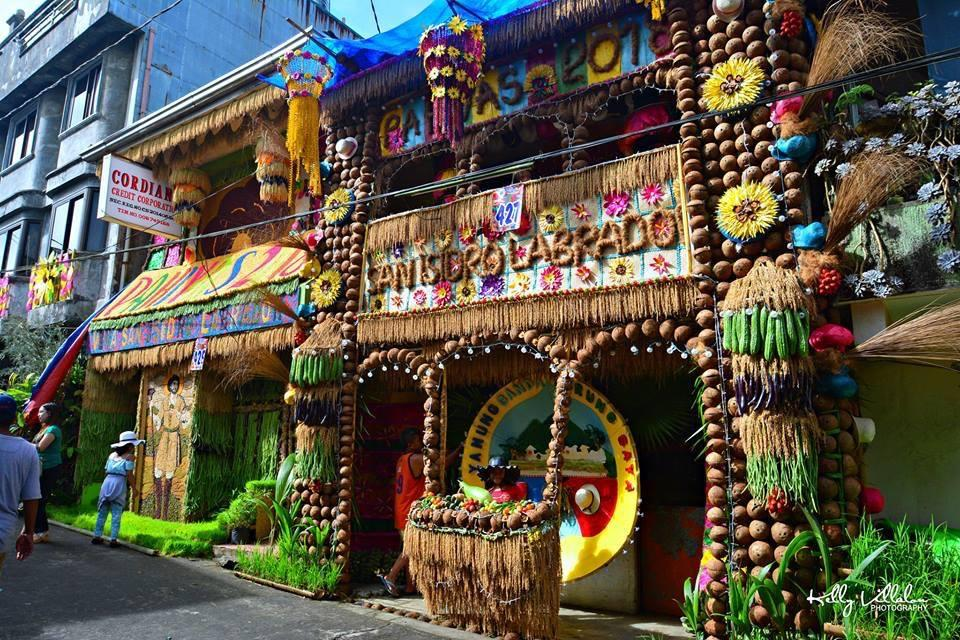
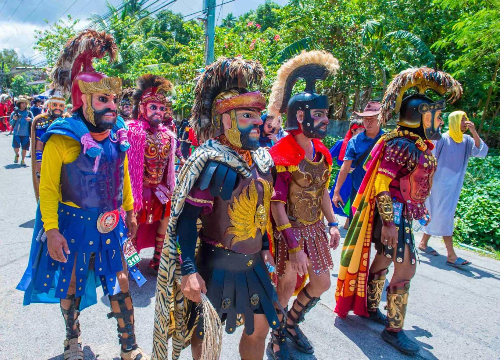

Festivals



Luzon celebrates many colorful festivals that showcase the region's traditions, religious beliefs, agricultural products, and artistic creativity.
Popular festivals:
- Panagbenga Festival (Baguio City) - Also known as the Flower Festival, celebrated through flower floats, street dancing, and colorful decorations.
- Pahiyas Festival (Lucban, Quezon) - Celebrated to give thanks for a bountiful harvest, with houses decorated using colorful agricultural products.
- Moriones Festival (Marinduque) - A religious festival featuring participants wearing Roman soldier-inspired masks and costumes.
- Peñafrancia Festival (Naga City) - A religious celebration honoring Our Lady of Peñafrancia.
- Giant Lantern Festival (San Fernando, Pampanga) - Famous for its enormous, beautifully illuminated Christmas lanterns.